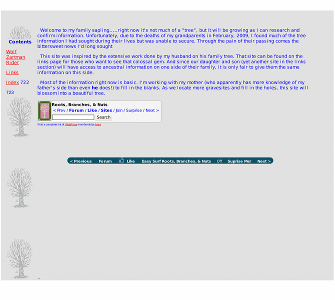

Previewing: Wolf, Zartman Families Previewing: Wolf, Zartman Families 
Use the left/right red arrow controls to navigate through this ring - Click the preview image to visit the member site.

A work in progress - research of the families Wolf and Zartman in the York County area of Pennsylvania.
Wolf, Zartman Families owned by:
 androb androb
A member of the original webring since 11/03/2009.
|
|